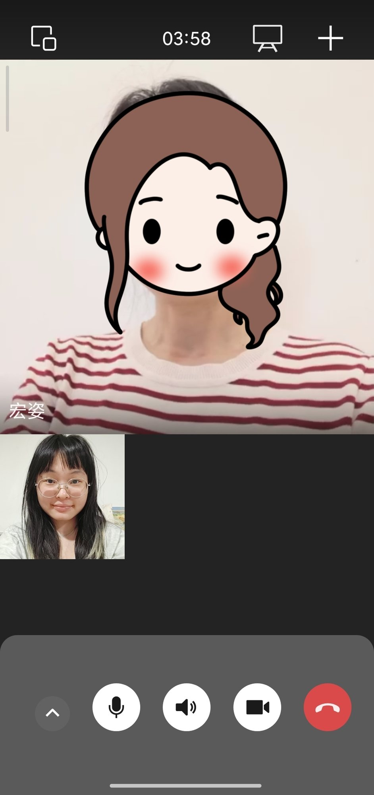
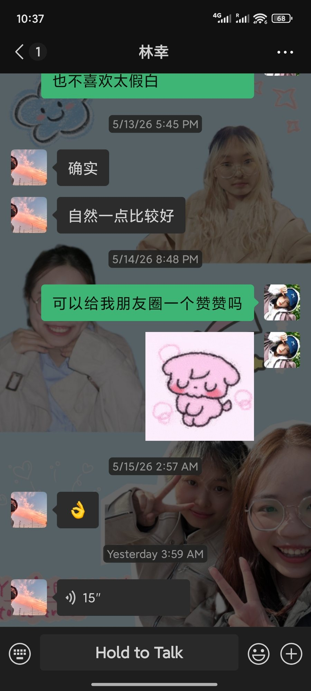
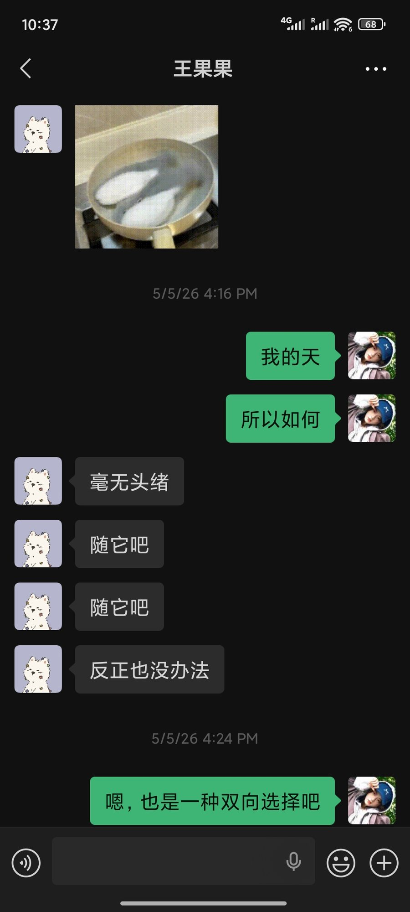
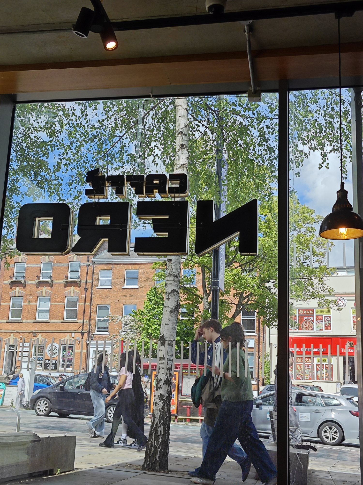
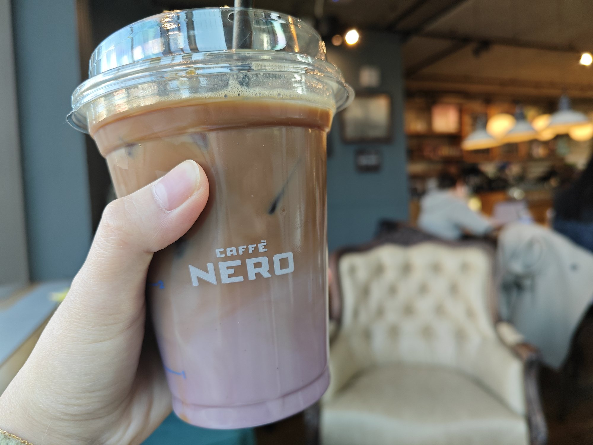
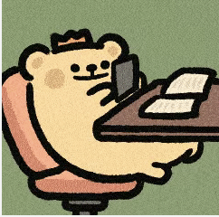
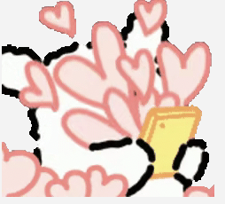
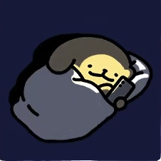

Starts with a call
This day starts with WeChat. As soon as I wake up, I call my mum back home in China. Although it is early morning in the UK, it is already afternoon for my parents. This is the only time when all of us are free to talk.
Unlike me and most of my friends, my parents do not constantly check their phones, so text messages are often missed. Video calls have therefore become part of our family routine. Of course, we do not always have something new to talk about. Sometimes we simply leave the camera on while doing our own things, almost as if we are living in the same house.
Messages may be missed, but love and companionship travel through the camera and microphone, overcoming the constraints of time and distance. We call at the same time every morning, usually for about an hour. Outside of that, we rarely text or chat during the rest of the day.
Media: WeChat — a Chinese social media platform that functions as both the communication channel and the social world itself.
Genre: family check-ins, shaped by their own unspoken conventions.

Same app, same account, different vibe
Before my morning lecture, I still have time to make breakfast and chat with friends on WeChat. Unlike conversations with my family, my friends and I rarely call unless something urgent happens.
Most of the time, we simply text. On this particular morning, I was asking a friend who lives next door to go to the lecture with me. We are both Chinese students studying in the UK, so we speak almost entirely in Chinese on WeChat, although English terms occasionally appear in our messages.
Unlike family communication, which happens at a fixed time each day, our conversations continue throughout the day in short bursts of two or three minutes at a time. We study at the same university, live in the same apartment building, and share many of the same daily experiences, so our chats are casual, fast, and constantly ongoing.
The topics themselves are usually ordinary: lectures, assignments, other friends, dinner plans, or what to do over the weekend. Communication does not need a clear purpose. Sometimes sending a meme, an emoji, or even a short voice message is enough to maintain a sense of connection.
Media: WeChat, alongside offline interaction.
Genre: casual everyday conversations about university life, friendships, and daily routines.


Personal bubbles in public space
After finishing all my lectures, I went to the café inside the university library to relax for a while. With my headphones on, I became surrounded by music. The "music bubble" separated me from the noise and movement around me, creating a temporary private digital space where I could study, read, and work on my laptop. Even though I was sitting in a crowded public space, the combination of music, screens, and headphones allowed me to mentally withdraw from the people around me. The café remained socially public, but digitally and emotionally, the space felt personal.
Media: laptop, headphones, music streaming platforms.
Genre: online studying, reading, and ambient listening.


Rednote & Instagram
Night time belongs to Rednote and Instagram. Although, in reality, social media is always there in the background. There are usually no specific events happening. These platforms have become part of the texture of my everyday online life. I open them in the moments between lectures, while drinking coffee, or when lying in bed before sleep. I scroll, I observe, and occasionally I post something myself.
Unlike WeChat, which often feels purposeful and relationship-based, Rednote and Instagram are more ambient and endless. The experience is less about direct communication and more about continuously moving through streams of images, videos, trends, and other people's lives. Sometimes I am actively participating; other times I am simply watching. Even silence online still feels like participation.
Media: phone and social media apps.
Genre: social communities, short-form content, and everyday scrolling culture.



My Reflection
When I looked at the map properly, I felt it’s less like a platform map and more like a time map. Morning belongs to WeChat, and through WeChat it connects me with China. The call with my parents, the secondhand group, the messages from my friends. All of it in Chinese, all of it carrying a different timezone underneath it. This is what Madianou (2015) calls polymedia — the way we don’t just use platforms as neutral tools, but embed them into the texture of our relationships, choosing them because of what they mean socially, not just what they can technically do.
By the time I’m sitting in a lecture hall, the register has completely shifted. I’m not a daughter or a flatmate or someone replying in a group chat anymore. I’m a student, which comes with its own communicative role and its own limits. I take notes. I listen. I don’t interrupt. The device is still the same phone, but the self using it feels different. Jones and Hafner (2021) describe this as the mediated self — the way digital media don’t just carry our communication, but actively shape which version of ourselves we perform and for whom.
Then the evening becomes less defined. No single platform owns it. It’s just the texture of scrolling, the passive presence of Rednote and Instagram, music in my headphones on the walk home. These platforms create what their affordances are designed for: an endless stream that asks for attention without demanding participation. The day begins with a video call that asks me to show up, look presentable, and say I’ve eaten. It ends with content consumption that asks nothing from me at all — what Kress and van Leeuwen (2001) would recognise as a shift in my role from producer to spectator, from someone making meaning to someone receiving it.
This shift — from relational to invisible, from performing presence to quietly receiving — is probably the most honest thing the map reveals. The same device, the same hands, the same day. But the modes, the media, and the social roles they carry changed completely depending on the hour.
Comments